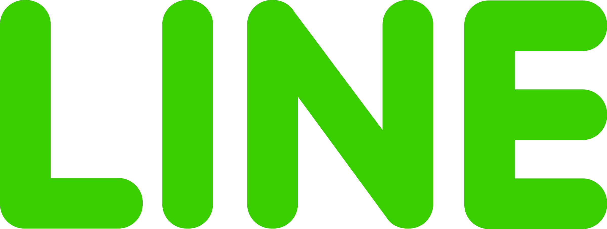
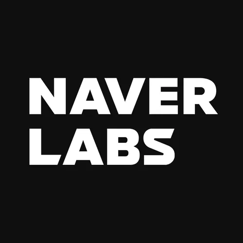
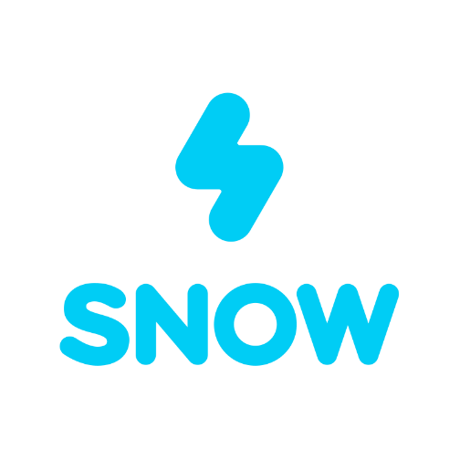

네이버는 수많은 SME와 창작자, 파트너들이 미래 기술을
활용해 글로벌 시장에서
더 큰 성장을 이룰 수 있도록
지원하는 글로벌 테크 플랫폼입니다.
소개
네이버(주)는 글로벌 ICT 기업으로서 한국 최대 검색포털 네이버를 서비스하고 있고,
그 계열사에서 모바일 메신저 라인, 동영상 카메라 스노우, 디지털 만화 서비스 네이버웹툰,
메타버스 서비스 제페토 등을 서비스하고 있습니다.
또한, 네이버(주)는 인공지능, 로보틱스,
모빌리티 등 미래 기술에 대한 지속적인 연구개발을 통해 기술 플랫폼의 변화와 혁신을 추구하며
세계 각국의 수많은 이용자와 다양한 파트너들이 함께 성장할 수 있도록 노력하고 있습니다.
CONTACT
네이버 본사
ADDRESS
경기도 성남시 분당구 정자일로 95 네이버 1784 우)13561
NAVER 1784, 95 Jeongjail-ro, Bundang-gu, Seongnam-si, Gyeonggi-do, Republic of Korea
주요 관계사
 라인
2011년 메신저 앱으로 시작한 LINE은 전 세계에서 가장 빠르게 성장한 글로벌 메신저 플랫폼으로,
이제는 메신저를 넘어 사람과 사람, 기업, 서비스를 연결하는 허브 역할을 하고 있습니다.
바로가기
 네이버 랩스
네이버랩스는 네이버의 미래 기술을 책임지는 R&D 전문 자회사입니다. 한국과 유럽의 우수한 연구자들이
함께 AI, 로보틱스, 자율주행, 3D/HD매핑, AR 등의 연구에 매진하고 있습니다.
바로가기
 네이버웹툰
네이버웹툰
국내 대표 웹툰 플랫폼 네이버웹툰을 운영하는 네이버의 자회사로 2017년 5월 설립되었습니다. PC와
모바일에서 웹툰/웹소설/ 장르소설/만화를 비롯한 콘텐츠의 제작 및 유통에 힘쓰고 있으며,
특히 창작자의 저변 확대에 기여하고 있습니다.
바로가기
 스노우
2015년 9월 출시한 SNOW는 캠프모바일의 게릴라 프로젝트로 시작되었습니다. ‘일상을 보다 생생하고 재미있게
공유하자’는 서비스 콘셉트 아래 글로벌 시장에서 지속적인 성장세를 이어나가고 있는 스노우(snow)는별도
법인으로 독립한 이후 다양하게 새로운 기술 결합 및 카메라 기술 고도화로 글로벌 시장에서 빠르게 시장
확대를 하고 있습니다.
바로가기
장세빈
홍보 영상
Teams
서로 다른 사람들이 모여 한 방향으로 나아갑니다.
성장의 조각을 찾기 위한 실험
어떤 일 하시나요.
안녕하세요. 네이버웹툰 KR Growth 팀의 이민선입니다. 저희 팀은 한국 웹툰 서비스의 그로스(Growth)를 담당하는 팀인데,
매일의 서비스 지표와 유저 데이터를 살펴 보고, 서비스의 성장과 바로 연결되는 주요 지표가 무엇인지를 정의하고,
문제를 해결할 수 있는 가설을 수립하고 실행하는 일을 합니다.
쭉 IT 업계에서 일하셨다고요.
저는 올해로 13년 차인데, 쭉 IT 업계에 있었어요. 카카오에서는 메신저와 모빌리티 서비스 마케팅을 담당했고, 라인에서의 블록체인 사업 기획을 거쳐 네이버웹툰에 합류했습니다.
이건 제 개인적인 변화이기도 한데요, 주니어일 때는 사실 제가 하는 일이 시각적으로 보여지는 것에 큰 성취감을 느꼈어요. 이건 내가 기획한 프로모션 페이지야, 내가 참여한 극장 광고야, 이런 지점에서 큰 즐거움을 느꼈죠.
팀 소개를 해 주세요.
제가 네이버웹툰 그로스 팀에서 일한 지 2년 반 정도가 되었는데요. 저희 팀은 일반적인 기획팀 혹은 운영팀으로 정의하기에는
담당하는 역할이 좀 더 광범위합니다.
서비스의 사업 방향을 정하기 위한 근거를 만드는 전략 기획성 업무도 있고, 아주 다양한 유저의 방대한 지표를 매일 추출하고 가공하는 데이터 업무도 있고, 앱에서 노출되는 배너나 프로모션 같은 서비스 운영과 관련된 업무도 담당하죠. 제가 좋아하는 일을 모두 할 수 있는 팀인 것 같아요.
Teams
서로 다른 사람들이 모여 한 방향으로 나아갑니다.
마음을 사로잡는 방법
지금 하고 계신 일을 소개해 주세요.
서비스 기획자, 개발자, 디자이너 분들과 함께 좋은 서비스를 만들기 위해 마케터들도 열심히 노력하고 있는데요. 좋은 서비스를 만드는 수많은 작업, 과정 중 마케터는 ‘높은 브랜드 선호도’를 만드는 일을 주요하게 한다고 생각합니다.
사용자의 마음을 사로잡는 일, 이때 마케터가 해야 할 일은 사용자에게 유효하게 작용할 만한 매력을 찾아 전달하는 일이라고 생각합니다.
마케터의 일은 어떤 것이라고 생각하시나요.
네이버쇼핑 서비스에서 가장 매력적인 부분은 바로 ‘네이버페이 포인트’일 거예요.
실제로 많은 사용자가 열광하고 있는 지점이기도 하고, 마케팅을 집행할 때 저희가 가장 집중한 부분이기도 합니다.
물가는 계속 오르고, 보장할 수 없는 ‘최저가’보다는 진짜로 유용하게 쓰일 ‘포인트’를 강조하려고 한 겁니다.
그렇게 나온 메인 카피가 ‘고물가에 힘이 되는 네이버쇼핑’이에요.
네이버쇼핑 마케팅에서는 어떤 매력을 주요하게 전달하고자 하셨나요.
네이버쇼핑 서비스에서 가장 매력적인 부분은 바로 ‘네이버페이 포인트’일 거예요.
실제로 많은 사용자가 열광하고 있는 지점이기도 하고, 마케팅을 집행할 때 저희가 가장 집중한 부분이기도 합니다.
물가는 계속 오르고, 보장할 수 없는 ‘최저가’보다는 진짜로 유용하게 쓰일 ‘포인트’를 강조하려고 한 겁니다.
그렇게 나온 메인 카피가 ‘고물가에 힘이 되는 네이버쇼핑’이에요.
Teams
서로 다른 사람들이 모여 한 방향으로 나아갑니다.
애정이 책임이 될 때
어떤 일 하시나요.
2017년 여름에 네이버에 합류했고, 쭉 블로그 팀에서 일하고 있습니다. 블로그 기획자로 모먼트 등 여러 프로젝트를 진행했고 현재는 스마트에디터 기획과 운영을 하고 있습니다.
덕업일치를 이루셨다고요.
IT 회사에서 일하는 게 꿈이었어요. 어려서부터 IT 관련 프로그램에 대한 부분에 관심이 많았거든요. 초등학교 때부터 프로그램으로 홈페이지를 만드는게 취미이기도 했고요. 대학생 때 서울로 상경해서 여러 도전을 했고, 게임회사에서 웹 기획자로서의 커리어를 시작하게 되었습니다.
블로그는 언제 처음 시작하셨는지, 계기는 무엇이었는지 궁금합니다.
처음 시작한 것이 2009년이었는데, 그 이후에도 꾸준히 블로그에 기록을 해 오고 있어요. 사실 멋있는 계기는 아니었는데요.
대학교 때 대외활동을 시작해 보려는데, 그때는 모든 대외활동 신청서마다 꼭 블로그 주소를 적는 항목이 있었어요.
그러던 와중에 <슈퍼스타K 1>이라는
프로그램이 시작했길래 시청 후기를 블로그에 남겼는데 갑자기 폭발적인 반응이 오는 거예요. 대중의 관심사가 블로그에
어떻게 반영되는지 직접 경험할 수 있는 순간이었죠.